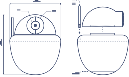
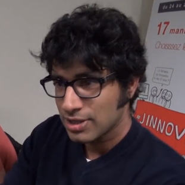

Passé, présent et futur de la POO
Xavier Van de Woestyne
A propos de moi
- Xavier Van de Woestyne;
- @xvw sur Github;
- développeur à Derniercri (Big Data et systèmes distribués);
- OCaml, Erlang, Go!, Ruby, PHP, SQL;
- amour tout particulier pour les systèmes de types;
- jeux-vidéos, Bandes dessinées, littérature ... allemande.
